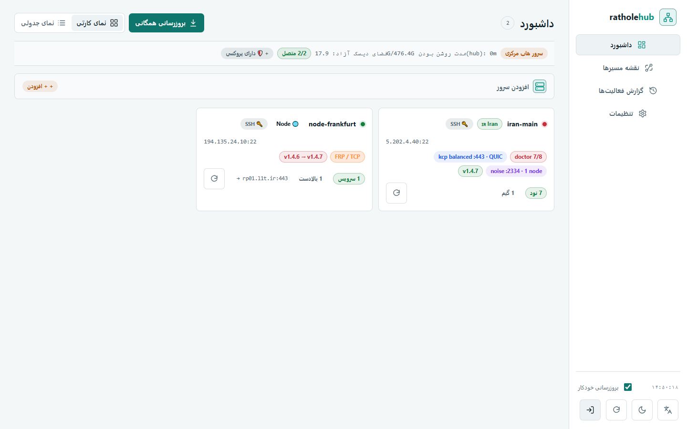

تونل معکوس و عبور از سانسور
طراحی چند-موقعیتی روی یک دامنه و یک پورت: مسیریابی با path، چند حامل (ws/kcp/plain/noise بههمراه Backhaul SMUX، FRP و GRE) و استقرار تکفرمانی با بازگشت امن — ساختهشده برای مقاومت زیر DPI.
اوپنسورس · ایران l8PYGIT
یک دامنه، یک گواهی، یک پورت — و نودهایی از گوشههای دنیا که به داخل ایران تونل میزنند. اینجا زیرساختهایی که میسازم و راههای حمایت از آنها را میبینی.
01دربارهٔ من
زیرساخت تونلهای معکوس چند-موقعیتی میسازم: یک دامنه، یک پورت ۴۴۳ و نودهایی بیرون از ایران که با چند حامل مختلف به هم وصل میشوند. کارم از هستهٔ تونل (rathole، Backhaul، FRP، GRE) تا پنل مدیریت کاربر، ربات تلگرام فروش و درگاه پرداخت کریپتو را در بر میگیرد.
بیشتر Go و Python مینویسم و Bash و nginx و systemd خانهٔ دومم هستند. هر چیزی که میسازم اول برای خودم یک مسئلهٔ واقعی دارد: مستندات کامل، استقرار تکفرمانی و مسیر برگشت امن — چون زیرساخت واقعی تحمل «باید کار کند» را ندارد.
self-hosted docs-first rollback-safe
02حوزههای فعالیت
هر حوزه یک مسئلهٔ واقعی است که خودم به آن برخوردم؛ در محیط عملیاتی حل شده، مستند شده و هرجا منطقی بوده اوپنسورس شده است.
طراحی چند-موقعیتی روی یک دامنه و یک پورت: مسیریابی با path، چند حامل (ws/kcp/plain/noise بههمراه Backhaul SMUX، FRP و GRE) و استقرار تکفرمانی با بازگشت امن — ساختهشده برای مقاومت زیر DPI.
پنل کنترل کاربر، پلن، تمدید و مصرف؛ موتور نود چند-مستأجری با مسیریابی SNI روی پورت ۴۴۳ و پورتهای داینامیک هر اینستنس؛ و wrapper استقراری که نود را در چند دقیقه روی Railway بالا میآورد.
درگاه پرداخت مستقل و قابل استفادهٔ مجدد: ساخت فاکتور، تأیید تراکنش روی زنجیره و وبهوک — بدون واسطهٔ پرداخت، تا داخل هر پنل یا رباتی بنشیند.
ربات فروش و پشتیبانی اشتراک: پرداخت، تمدید، اعلانهای خودکار و مدیریت کاربر — کل جریان داخل تلگرام انجام میشود.
03ابزارها
04پروژهها
سیستمهای واقعی و در حال اجرا — نه دمو. بخشی اوپنسورساند و بقیه به دلایل امنیتی خصوصی میمانند.
هستهٔ تونل معکوس چند-موقعیتی روی rathole + Nginx: یک دامنه و پورت ۴۴۳، مسیریابی با path، حاملهای ws/kcp/plain/noise و Backhaul/FRP/GRE، هاب وب با کنترل سرویس، REST Agent و سایت مستندات استاتیک.

پلن کنترل فروش دسترسی به نودهای PasarGuard: مدیریت کاربر، پلنها، تمدید و گزارش مصرف در یک پنل.
موتور نود چند-مستاجری و اختصاصی برای PasarGuard؛ نصب، پیکربندی و ایزولهسازی خودکار هر مستأجر.
درگاه پرداخت کریپتوی مستقل و قابل استفادهٔ مجدد؛ فاکتور، تأیید تراکنش روی زنجیره و وبهوک.
مخزن خصوصی — در دسترس عمومی نیست
ربات تلگرام فروش اشتراک دسترسی به نود؛ پرداخت، تمدید و اعلانهای خودکار.
مخزن خصوصی — در دسترس عمومی نیست
استقرار نود PasarGuard بهصورت سرویس Docker روی Railway؛ آماده در چند دقیقه.
07∞
آزمایشها، بازنویسیها و باقی زیرساخت همانجا زندگی میکنند.
مشاهدهٔ مخزنها05مستندات
هر پروژه با قدمهای نصب، توضیح معماری و عیبیابی میآید — فارسی و انگلیسی. از همینجا شروع کن.
06حمایت
سرورها، دامنهها و شبهای طولانی هزینه دارند. اگر یکی از این ابزارها وقتت را نجات داده، یک حمایت کریپتوییِ یکباره آنها را زنده و اوپنسورس نگه میدارد.
آدرس شبکهٔ BSC
0x2364898407e8A42DA554B909989cd9B28eE61314
آدرس شبکهٔ TON
UQCondoXRwQNt0fQvvmYGa_Fn39D9szjQH4eBqIcUd5r1yfH
آدرس شبکهٔ Tron
TRhnkJFpj9uxA2aqUxapJAFhkzNPbfxKwp
فقط روی شبکهای که روی کارت نوشته شده ارسال کن و پیش از تأیید، آدرس را با دقت مقایسه کن. انتقال کریپتو برگشتپذیر نیست.
07ارتباط
همکاری، گزارش باگ یا پروژهای که به این نوع زیرساخت نیاز دارد — سریعترین راهها پایین است.